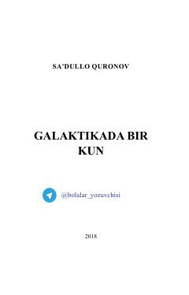

GBYosh ixtirochi Ahmadning koinotga bo'lgan qiziqishi va ixtirochilik tanlovidagi sarguzashtlari.
Yosh ixtirochi Ahmad o'zining noyob fazoviy kema loyihasi bilan yosh ixtirochilar tanlovida ishtirok etadi. U o'zining fotografik xotirasi va ajoyib zehniga tayanib, koinot sirlarini ochishga intiladi. Hikoya bolalarning orzulari va ilm-fanga bo'lgan qiziqishini tarannum etadi.